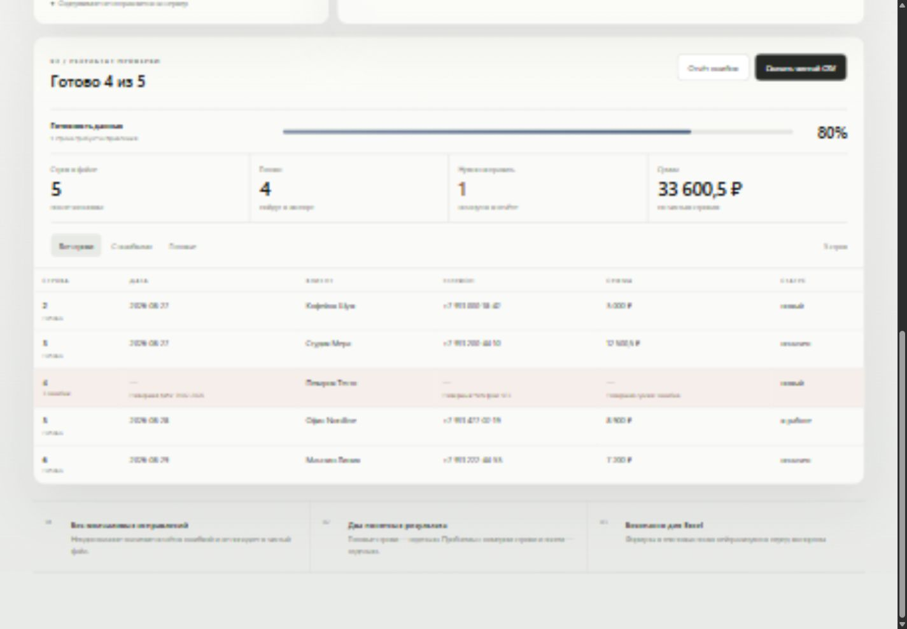

CSV NORMALIZATION · LOCAL FIRST
Данные
становятся ясными.
Файл проходит четыре понятных шага — и превращается в готовый отчёт без ручной проверки каждой строки.
Открыть рабочий продукт ↗- Роль
- Product / UX / Frontend
- Формат
- Browser utility
- Проверка
- 8 domain tests
reportkit.locallocal processing

01 / ПРОБЛЕМА
Ошибка прячется
в обычной строке.
Один файл может смешивать разные даты, телефоны, суммы и названия колонок. Ручная проверка медленная, а молчаливое исправление опасно.
31.02.2026Пекарня Тесто123ошибка4 проблемы
02 / MAPPING
Названия могут
быть любыми.
ReportKit узнаёт русские и английские колонки. Для нестандартного файла пользователь один раз указывает соответствие вручную.
Дата→date / created / когдаКлиент→client / company / ктоСумма→amount / total / выручка
03 / ПРОВЕРКА
Проблема остаётся
рядом с записью.
ReportKit не угадывает неоднозначные значения и не отправляет их в чистый файл.
04 / MOBILE
Сложная таблица.
Простой телефон.
На узком экране каждая строка превращается в отдельную карточку. Ошибки остаются рядом с полем, а основные показатели не теряют иерархию.
390 pxбез горизонтального переполнения
05 / ДВА РЕЗУЛЬТАТА
Чистые данные.
И понятные ошибки.
Пользователь скачивает готовый CSV и отдельный отчёт с номером строки, полем, исходным значением и причиной.
Только проверенные и нормализованные строки.
Все проблемы для точечного исправления.
- 8автотестов
- 5обязательных полей
- 2файла результата
- 0загрузок на сервер